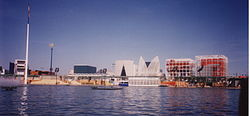
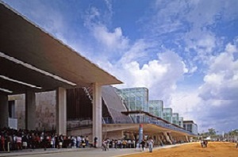

La Exposición Universal de Sevilla 1992, conocida popularmente como "Expo'92" o "la Expo",
fue una exposición universal celebrada en 1992 en la ciudad española de Sevilla.
Como toda exposición universal posterior a 1931, estuvo regulada por la Oficina Internacional
de Exposiciones. Tuvo una duración de seis meses, comenzando el 20 de abril y finalizando
el 12 de octubre,2 coincidiendo la fecha con el V Centenario del Descubrimiento de América.
Fue realizada para conmemorar este hecho y su lema fue "La Era de los Descubrimientos".
La mascota oficial de la Expo 92 se llamó Curro, un simpático pájaro de pico y
cresta multicolor
Curro, la mascota oficial de la Expo 92
Arquitectura del paisaje en la Exposición
El Plan Director del Paisajismo de la Exposición Universal de Sevilla fue encargado al
equipo formado por Jorge Subirana y Silvia Decorde, que realizaron el encaje de los espacios públicos
verdes de las avenidas, los accesos y parques intramuros y perimetrales de la exposición.
Su intervención sentó las bases para una exposición, enclavada sobre una isla de aluvión,
donde la vegetación corría a la par que la arquitectura incorporándose a los
espacios verdes el "Proyecto Pérgolas" y el "Proyecto de Bioclimatismo" que sentó las bases
en España para el desarrollo de un urbanismo medioambientalmente sostenible.
Los responsables del proyecto bioclimático y sistemas de climatización de espacios
exteriores fueron el Dr. Arq. Jaime López de Asiain junto a los Dres en física Valeriano
Ruiz Hernández y Jaime Navarro Casas todos catedráticos de la Escuela Técnica
Superior de Sevilla.
En el diseño del paisaje tuvieron especial importancia varios elementos para el desarrollo
en dos años de una ciudad arbolada. Por un lado la incorporación de un equipo de
paisajistas para el desarrollo del plan director del recinto. Por otro la incorporación al
equipo de diseño de la organización de un arquitecto paisajista que velara por el
desarrollo y la unidad de los proyectos arquitectónicos a partir de los ejemplares arbóreos.
Junto a ello la decisión de incorporar un vivero de aclimatación y una central de compras
propia que garantizaba la existencia de ejemplares arbóreos de gran tamaño
repicados y disponibles en cualquier momento, así como la aclimatación y el cultivo
de las especies donadas por los países iberoamericanos dentro de la
"Operación Raíces" y la segregación de las obras de paisajismo de las obras de
construcción, pionera en España, permitió garantizar la ejecución de
los proyectos de paisaje en su integridad sin los vaivenes económicos propios de este tipo de obras.
La ejecución en un periodo récord de dos años con la incorporación de
casi 25.000 ejemplares arbóreos, la introducción de nuevas especies botánicas
en Europa a finales del siglo XX, la formación de un anillo verde y el diseño de
los espacios públicos arbolados, convirtieron este proyecto en referente
para las futuras exposiciones y su influencia en el desarrollo de las nuevas ciudades y
urbanizaciones aún perdura a pesar del deterioro y la desaparición de muchos de
los espacios proyectados.
Entre los proyectos de paisajismo desarrollados para la Exposición Universal, muchos de
los cuales aún pueden contemplarse, destacaron: Parque Jardín del Guadalquivir
(J. Subirana y S. Decorde), Jardines de la Cartuja y Oficinas Caracolas (Subirana y Decorde),
Muro de Defensa y Bosque en Galería (Subirana y Decorde), Jardín de las Américas
(R. Librero), Avenida 5 (R. Librero), World Trade Center (R. Librero, A. García Camarasa),
Avenidas 2 (M. Arencibia), Avenidas 1 y 4 y Camino de los Descubrimientos (M.Arencibia, R. Librero),
Avenida de los Descubrimientos (Juan de Aizpuru), Borde del Lago (R. Librero),
Aparcamientos de Autobuses (M. Arencibia), Aparcamientos de Turismos (R. Librero),
Pabellones de la Organizadora (R. Librero), pabellón del Siglo XV (Leandro Silva, R. Librero),
Proyecto Pérgolas (A. García Camarasa), Cubiertas ajardinadas modulares y
Avenida V (R. Librero), Proyectos de Infraestructura de Riego y Fertirrigación (J. de Vicente).
Los espacios verdes a partir de este evento dejaron de ser meros acompañamientos en España
para ser protagonistas en pie de igualdad con la arquitectura y el urbanismo.

Panorámica del lago de España con los pabellones autonómicos al fondo
Pabellones
La participación de países, empresas y organismos internacionales fue abrumadora,
en total acudieron 112 países, 23 organismos internacionales, numerosas
empresas privadas y las 17 comunidades autónomas españolas.
Se construyeron 95 pabellones, de los que 63 eran de países, 5 temáticos,
6 de empresas, 5 de organizaciones internacionales y 17 de las comunidades autónomas.
Pabellones destacados
Los siguientes pabellones de la exposición han sido incluidos, en 2007, en
el Catálogo General del Patrimonio Histórico Andaluz
Pabellón
Arquitecto
Pabellón de Andalucía
Juan Ruesga Navarro
Pabellón de España
Julio Cano Lasso
Pabellón de Finlandia
Juha Jaaskelainen, Juha Kaakko, Petri Rouhiainen, Matti Sanaksenaho y Jari Tirkknen
Pabellón de Francia de la Expo 92
Jean Paul Viguier y J. F. Jodry
Pabellón de Hungría
Imre Makovecz
Pabellón de la Navegación
Guillermo Vázquez Consuegra
Pabellón de España

Pabellón de la Navegación
Pabellón de Andalucía
Seguridad
En los años 90 la organización terrorista ETA se encontraba muy activa.
En 1990 la Guardia Civil detuvo a Henri Parot en Santiponce cuando se disponía
a volar la Comisaría de la Gavidia, en el centro de la ciudad de Sevilla.
En abril de 1990 el etarra Arregui Erostarbe, alias Fiti, envió un paquete bomba al
despacho del comisario general de la Expo 92, Manuel Olivencia. El paquete fue abierto por
una empleada, María del Carmen Felipe, causándole la amputación de la mano izquierda
y varias heridas. En la escena del crimen se encontraron 14 tuercas a modo de metralla.
También resultó herido el conserje Joaquín Morente.
En 1991 ETA había cometido uno de los atentados más graves de su historia en Sevilla,
en la Cárcel de la Ranilla, con un resultado de 4 muertos.
Para la muestra hubo un gran despliegue de seguridad con más de 10.000 agentes
entre guardias civiles, policías locales y vigilantes de seguridad.